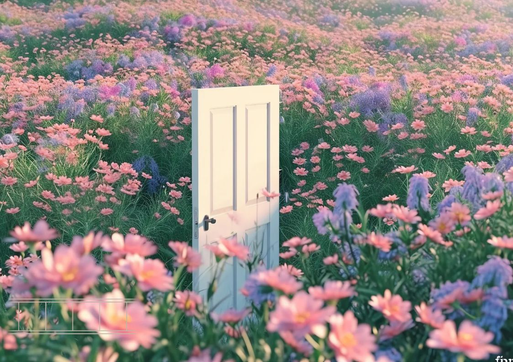
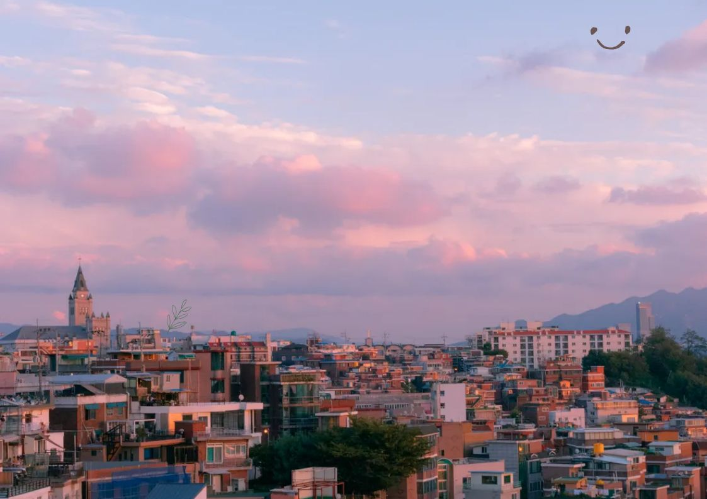
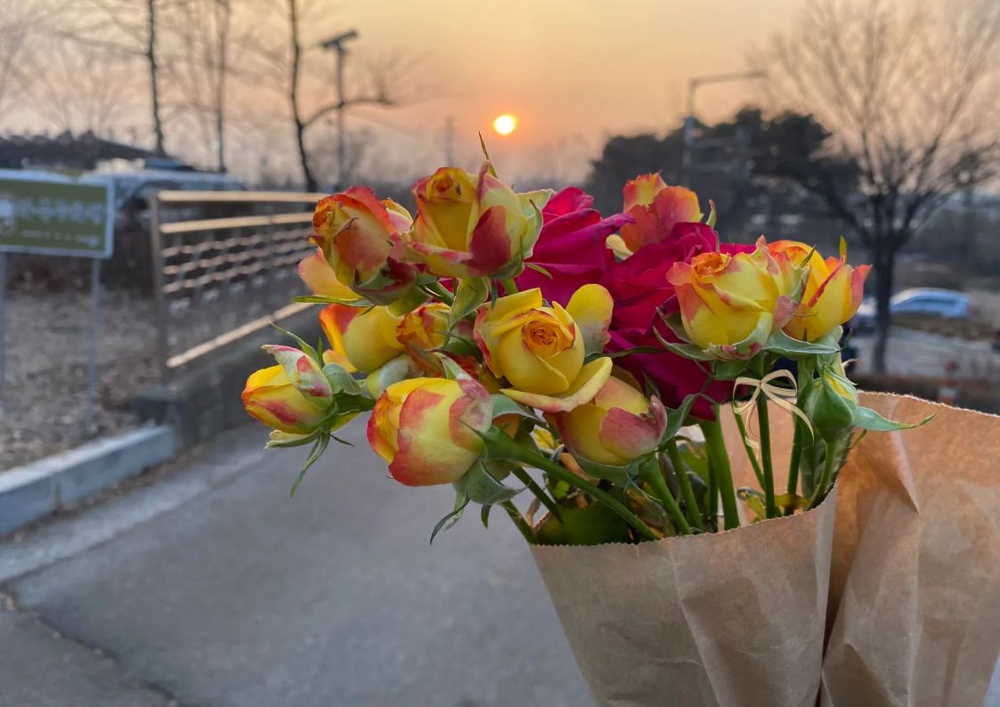
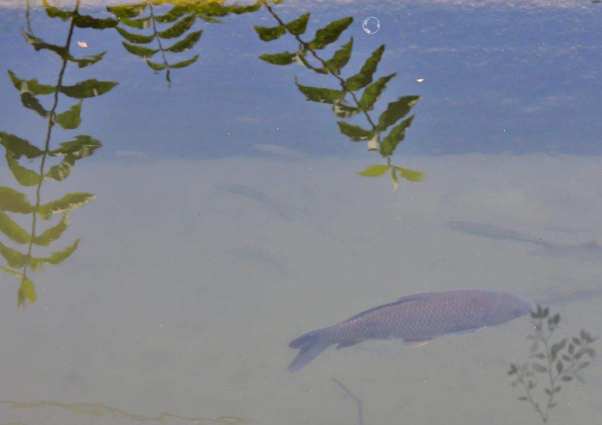

우리는 빠르게 흘러가는 일상 속에서
쉽게 휘발되어 버리는 당신만의 소중한 가치관에 집중합니다.
무드 아카이빙은 단순히 물건을 만드는 것을 넘어,
당신의 내면을 투명한 레진 속에 박제하여
볼 때마다 삶의 방향성을 상기시키는 시각적 매개체를 제안합니다.
쉽게 휘발되어 버리는 당신만의 소중한 가치관에 집중합니다.
무드 아카이빙은 단순히 물건을 만드는 것을 넘어,
당신의 내면을 투명한 레진 속에 박제하여
볼 때마다 삶의 방향성을 상기시키는 시각적 매개체를 제안합니다.
Resin Art Workshop: Value Archiving
- 조색 과정: 당신의 에너지를 닮은 잉크를 직접 선택하고 배합하여 단 하나뿐인 컬러를 만듭니다.
- 몰입의 시간: 레진이 경화되는 시간을 기다리며 자신의 내면을 돌아보는 정적인 순간을 경험합니다.
- 커스텀 디자인: 고유의 질감과 기포, 잉크의 흐름을 조절하여 자신의 성향을 작품에 투영합니다.
- 음악 큐레이션: 완성된 작품에는 당신의 가치관과 어울리는 선율을 NFC를 통해 연결해 드립니다.
나의 내면 풍경

01. FIRST IMPRESSION
기억되고 싶은 당신의 첫인상은 어떤 느낌인가요?
02. ENERGY COLOR
현재 당신의 에너지를 색깔로 표현한다면 어떤 색인가요?
03. CORE KEYWORD
삶에서 가장 소중한 키워드는 무엇인가요?
04. EMOTIONAL INK
레진 속 잉크 색채가 상징하는 당신의 감정은 무엇인가요?
05. MINDSET
이 작품을 바라볼 때마다 기억하고 싶은 마음가짐은?
06. BALANCE
당신의 가치관은 '중심'에 있나요, 아니면 '조화'롭나요?
07. COMFORT
지친 하루 끝에 필요한 위로의 형태는 무엇인가요?
08. SYMBOL
오늘 마음속에 머물러 있는 물건의 의미는 무엇인가요?

Music Tap
"당신의 공간에
가치관의 선율을 채우세요."

무드 아카이빙 작품에 스마트폰을 가볍게 탭하는 순간,
당신만을 위해 큐레이팅된 선율이 일상을 음악적인 온도로 물들입니다.



